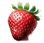

Десерти Kristallino – където изкуството среща десерта.
Отдайте се на нашите изящни творения, изработени със страст и прецизност от световноизвестния сладкар Кристалин Илиев. Разгледайте нашите иновативни десерти, които обещават да измамят вкусовите ви рецептори и да запалят сетивата ви.
Ягоди и босилек
Отпразнувайте същността на лятото със зрели ягоди, съчетани с ароматен босилек, освежаващо удоволствие за небцето.
Научи повечеКисело мляко, орехи и мед
Насладете се на перфектния баланс на кремообразно кисело мляко, хрупкави орехи и сладък мед в този райски десерт.
Научи повечеБекон и боровинки
Впуснете се в кулинарно приключение с пикантен бекон и сладки боровинки, смела комбинация от вкусове, която се противопоставя на очакванията.
Научи повечеСлънчогледови семки
Насладете се на неочакваната комбинация от кремообразна доброта и хрупкави слънчогледови семки, уникално лакомство, което ще ви накара да жадувате за още.
Научи повече

Chef Кристалин
Шеф Кристалин Илиев е световноизвестен сладкар, известен със своите иновативни и артистични творения на десерти. С повече от две десетилетия опит, той съчетава традиционни техники с модерни вкусове, завладявайки кулинарния свят чрез своята марка Krystallino. Уникалните десерти на шеф Кристалин, като кисело мляко с орехи и мед или бекон с боровинки, отразяват неговата отдаденост на качеството и креативността, спечелвайки й международно признание и лоялни последователи.
Oтзиви от клиенти
Майкъл Томпсън – ⭐⭐⭐⭐⭐
„Имах удоволствието да опитам десерта с ягоди и босилек и той надмина всички очаквания. Свежестта на ягодите, съчетана с фината нотка на босилек, беше истинско откровение. Нямам търпение да поръчайте отново!"
Майкъл Томпсън – ⭐⭐⭐⭐⭐
„Имах удоволствието да опитам десерта с ягоди и босилек и той надмина всички очаквания. Свежестта на ягодите, съчетана с фината нотка на босилек, беше истинско откровение. Нямам търпение да поръчайте отново!"
Майкъл Томпсън – ⭐⭐⭐⭐⭐
„Имах удоволствието да опитам десерта с ягоди и босилек и той надмина всички очаквания. Свежестта на ягодите, съчетана с фината нотка на босилек, беше истинско откровение. Нямам търпение да поръчайте отново!"
Запитвания и заявки
За да направите поръчка или запитване за нашите десерти, моля свържете се с нас на:info@krystallino.com
123 Вкусната улица, Девин, България
+359 (899) 456-7890
В медиите
Krystallino: Предефиниране на иновациите в десерта
Източник: сп. Кулинарни изкушенияKrystallino, ръководен от известния сладкар Кристалин Илчев, революционизира десертната сцена с иновативните си творения. От кремообразното кисело мляко, орехи и меден десерт до неочакваното съчетание на бекон и боровинки, всяко лакомство е щателно изработено, за да измами вкусовите пъпки и да разшири границите на вкуса. С фокус върху качествените съставки и вниманието към детайла, Krystallino продължава да завладява публиката и да предефинира иновациите в десертите.
Прочети статиятаKrystallino: Предефиниране на иновациите в десерта
Източник: сп. Кулинарни изкушенияKrystallino, ръководен от известния сладкар Кристалин Илчев, революционизира десертната сцена с иновативните си творения. От кремообразното кисело мляко, орехи и меден десерт до неочакваното съчетание на бекон и боровинки, всяко лакомство е щателно изработено, за да измами вкусовите пъпки и да разшири границите на вкуса. С фокус върху качествените съставки и вниманието към детайла, Krystallino продължава да завладява публиката и да предефинира иновациите в десертите.
Прочети статията